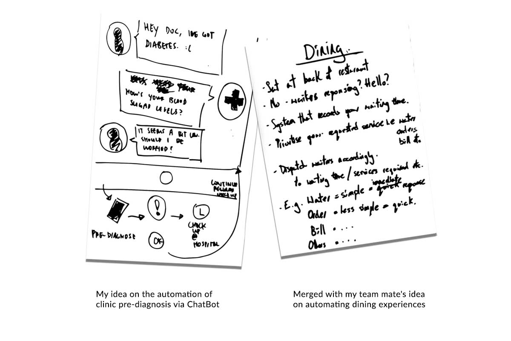
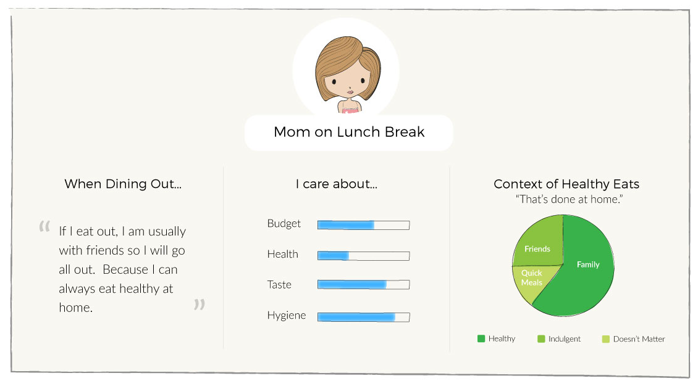
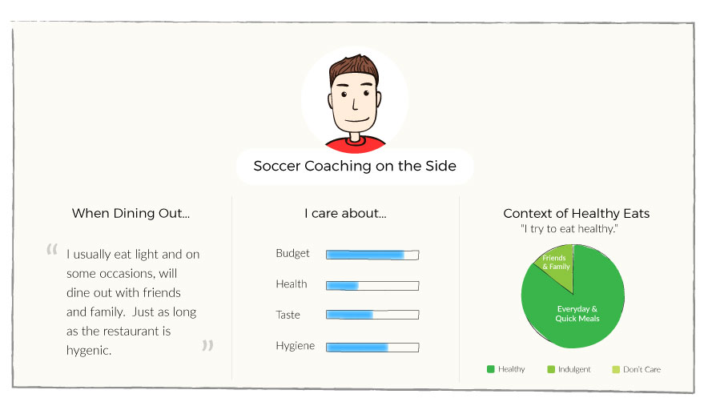
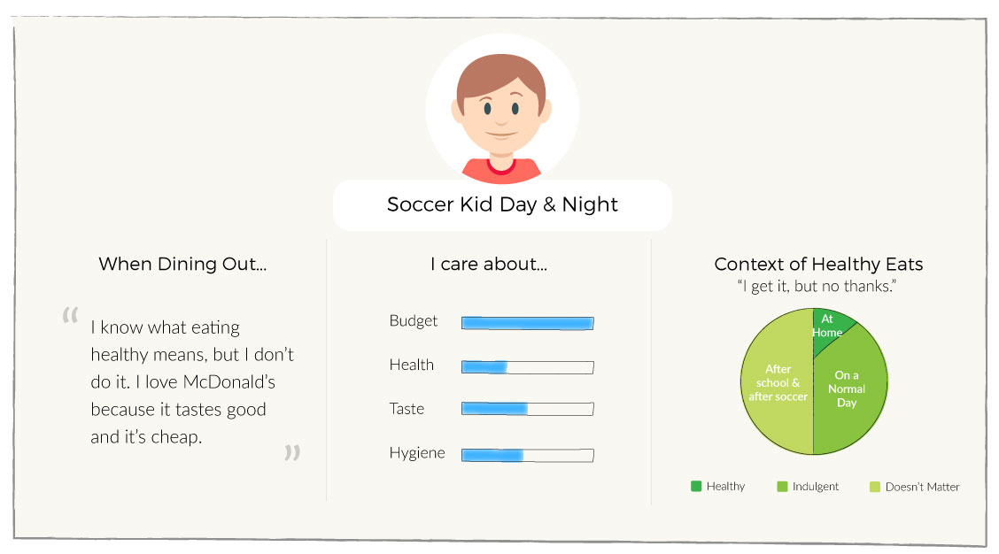
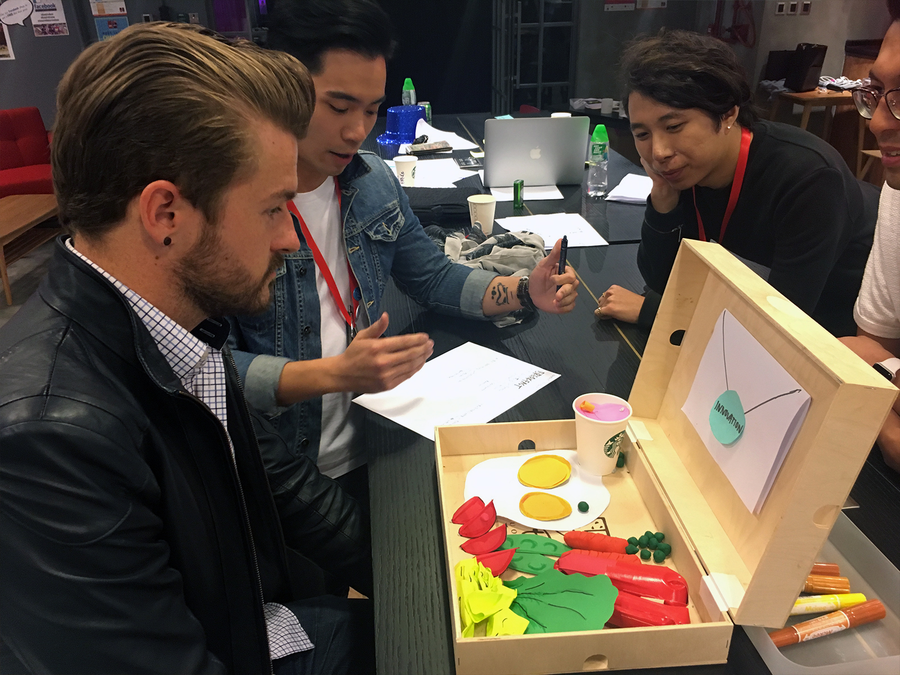

Service Jam is a design-driven hackathon also known as "jams" and a global movement on design thinking, prototyping and service design. It was a weekend of fun and creativity amongst 100 participating cities. The final delivery is how you make of 2017's theme "Hello? lo? o? o."
Hello, It's Me.
We kicked off the hackathon with our interpretation of "Hello". My first thought was ChatBot. I see ChatBot as part engagement and part automation, the former to engage users in a world of interaction dominated by text messages and the latter for streamlining customer service oriented tasks.
As I seeked like-minded individuals to join my team, I merged my idea with another on the automation of dining experiences. Because we thought, why not merge based on the commonality of health?

Where Eating Out Meets Nutrition
The beauty of design thinking is we fail but iterate quickly. We began the process by identifying our first problem statement. The trick is to keep the question open and not writing the problem statement to fit the solution. Because well, our user research findings eventually proved the solution irrelevant.
How might we personalize our diet and nutrition needs in a dining experience?
Let's Get Talking!
Our hackathon venue sits in an interesting mix of warehouse spaces, warehouse-turned-studios and residentials. In a way, this pre-determined our user profiles, but given a 48-hour time frame, we worked with what we had.
We hit up a soccer field close by and interviewed all sorts of age groups by the bleachers to understand their take on eating healthy when dining out.



3 Personas developed from our user research
As expected, every user has their own take on healthy eats. For some, if they wanted healthy options and to diet, they would just eat at home. For others, however, they always make a conscious effort - at home or eating out.
Now What?
Based on the research, we scrapped our inital problem statement and hit two main concepts that inspired our winning solution.
People in HK who skips breakfast aka Breakfast Skippers
Corporate scheme for breakfast subscription plans
You see, skipping breakfast is a behavior but also the incentive, and corporate scheme fits right in the picture as a solution.
We applied this phenomenon to the workplace and discussed how we, as staff, would love occasional treats to keep us motivated. We conducted a quick validation research with staff (hackathon participants) and team leads/managers (hackathon mentors).
For staff, we asked questions like "What motivates you? What would you like your manager to do more of?", and for team leads/managers, "How do you keep your team engaged and happy at work? How do you encourage them to innovate and be creative?"
With that, we reframed our problem statement.
The New Problem Statement
Introducing Hello Box
Hello Box is a Staff Wellness tiered subscription program for Team Leads and Managers to bring zombies back to life or better yet, to prevent their staff from becoming zombies. By Staff Wellness, we are referring to three main pillars - Health for physical health, Smarts for mental health, and Happiness for all of the above.
Corresponding to each layer of Wellness, there are three tiers to the program.
H E A L T H
Food for Health
A Balanced and Personalized Meal for your Staff
S M A R T S
Food for Thoughts
Workshops to stimulate Creativity & Innovation
H A P P I N E S S
Food for Happiness
The Ultimate Wellness Plan for Health and Smarts

Team #NoMoreBS from left to right: Gordon Lee, Leo Chak, Me, Herbert Lee and Samson Ng
"Quickest & Dirtiest" Winning Solution
48 hours, hundreds of iteration and mad prototyping had paid off! We earned ourselves the name "Quickest & Dirtiest" team for fast prototyping thanks to the Playdough and breakfast catering box.
What I found most rewarding about the hackathon was not the fact that we won - because that's not what Service Jams are about.
I learned that Service Jam is...
It embodies the spirit of Design Thinking.
It's more than Mobile App interfaces. It's about physical interaction and intangible emotions.
It's always about the User. Don't create for the sake of an idea, create for the user.
It teaches us the value of well-crafted user journeys. I consider it as part of understanding the user.
It's okay to fail but get back on your feet quick. Keep prototyping.